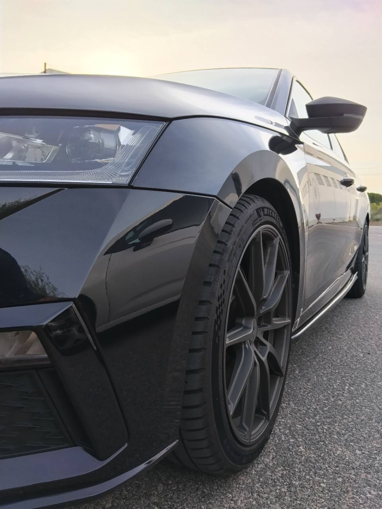

INFORMACIÓN EN INSTAGRAM
Calçotada 2027
Consulta la historia destacada «Calçotada 2027» para conocer los detalles.

CLUB OCTAVIA VRS CATALUÑA
El punto de encuentro para quienes vivimos
la pasión por el Octavia vRS en Cataluña.
01 / EL CLUB
Bienvenidos a los amantes de WRC
CLUB OCTAVIA VRS CATALUÑA nace como un lugar de encuentro para aficionados a Škoda y al Octavia vRS. Un espacio para compartir nuestros coches, intercambiar experiencias y disfrutar juntos de la afición.
02 / GALERÍA
Una primera mirada a nuestros coches.
Pulsa una imagen para verla completa.
HUMOR DEL CLUB
NUESTROS EXPERTOS CIENTIFICOS ESTAN A LA VANGUARDIA EN CUANTO A COMPLEMENTOS ENERGÉTICOS PARA SACAR EL MÁXIMO RENDIMIENTO A NUESTROS VEHÍCULOS PROTOTIPOS ,ESTO NOS DA LA FIABILIDAD Y NOS DA PRETIGIO ANTE ELON MASK
Pulsa la imagen para verla completa.
EL ÁLBUM DEL CLUB
Explora el álbum compartido del club en Google Fotos.
03 / QUEDADAS
Nos vemos en la próxima quedada del CLUB OCTAVIA VRS CATALUÑA para compartir nuestra pasión por los coches.
Lugar y hora pendientes de confirmar.
Consultar Instagram del clubINFORMACIÓN EN INSTAGRAM
Consulta la historia destacada «Calçotada 2027» para conocer los detalles.
04 / COMUNIDAD
Nuestra pasión también se comparte en Instagram.
Conoce el perfil del club y escríbenos para saber más sobre la comunidad.
CONTACTO DE PRUEBA
albertouceda77@gmail.comPuedes escribir a este correo durante las pruebas de la web.
El acceso privado de socios llegará en una siguiente fase. Mientras tanto, puedes contactar con el club a través de Instagram.